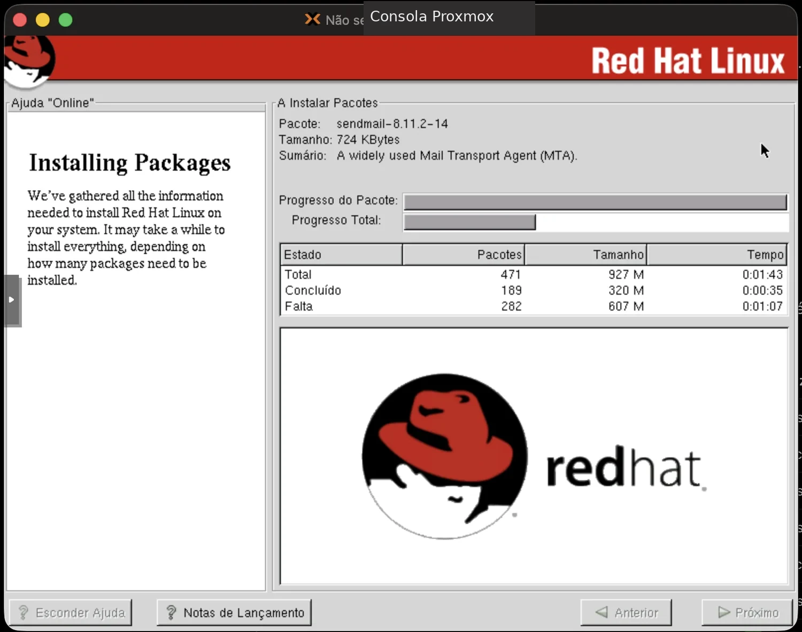
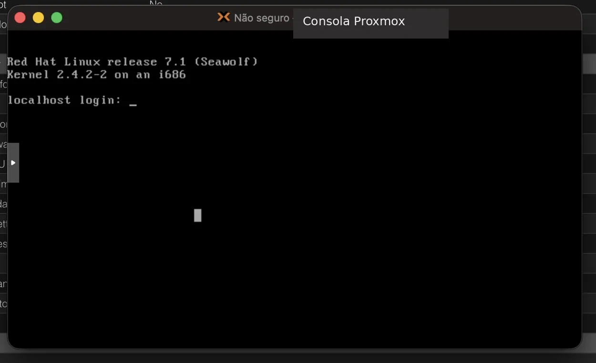
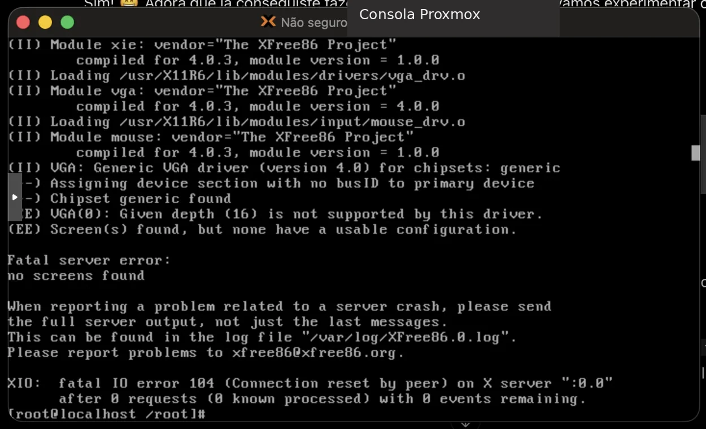
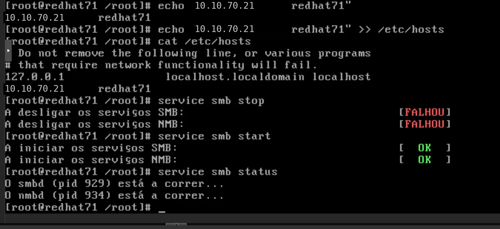
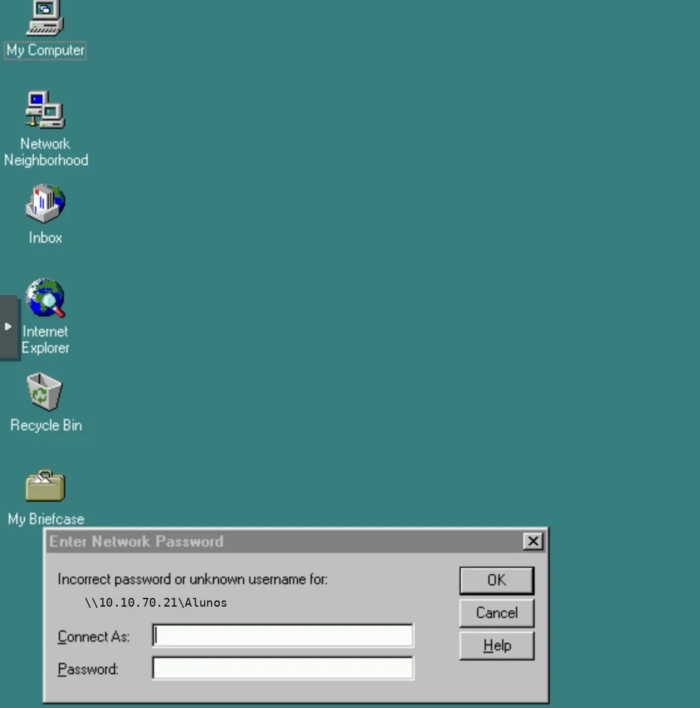
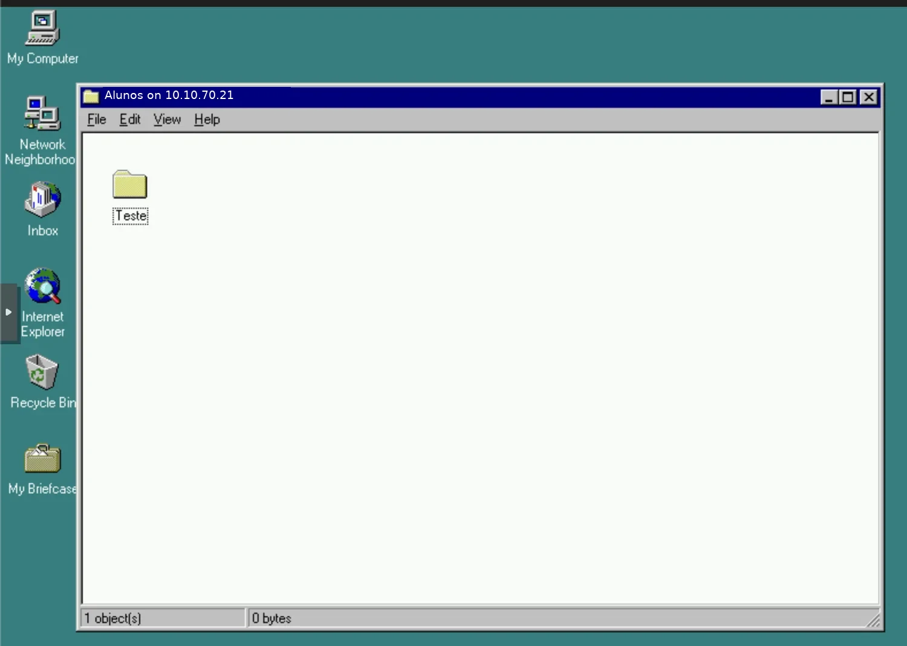

Experiência realizada em 11 de novembro de 2026: instalação de um servidor Red Hat Linux 7.1 (Seawolf) em Proxmox e acesso a uma pasta partilhada a partir de uma máquina Windows NT 4.0. A pasta «Teste» foi criada no Windows NT, dentro da partilha servida pelo Linux, confirmando escrita remota. As imagens abaixo são capturas reais dos testes.
Ambiente efetivamente utilizado
Servidor: VM 421 · RedHat-7.1-Samba · kernel 2.4.2-2 · Samba 2.0.7 · placa virtual RTL8139 · vmbr70 · IP 10.10.70.21/24 · sem gateway. (Endereços substituídos por valores de demonstração para publicação.) Cliente: Windows NT 4.0 na mesma bridge isolada. Partilha: ALUNOS no diretório Linux /srv/alunos.
Os testes foram feitos numa rede virtual histórica isolada. Não foram realizados testes de controlador de domínio Samba, de acesso através da internet ou de permissões para múltiplos utilizadores.
1. Instalação e primeiro arranque
A VM foi instalada a partir dos CDs do Red Hat 7.1. No Anaconda, foi utilizada a instalação personalizada, incluindo o grupo Servidor SMB (Samba) e ferramentas de desenvolvimento e utilitários. Durante a instalação foi necessário trocar a ISO do CD 1 para o CD 2 no leitor virtual do Proxmox. O sistema arrancou depois do disco virtual, apresentando o kernel 2.4.2-2.


2. Um problema típico da época: XFree86
O comando startx falhou com a mensagem VGA(0): Given depth (16) is not supported by this driver e no screens found. Foi inspecionado o ficheiro /etc/X11/XF86Config-4, onde estavam definidos o controlador vga, profundidade de cor de 16 bits e resolução de 1024×768. O disco da VM foi acedido a partir do Proxmox (com a VM desligada) para permitir a edição da configuração. Não está confirmado nestes registos que o ambiente gráfico tenha ficado funcional. O servidor e a partilha funcionam em modo texto.

3. Rede e Samba — diagnóstico e solução
A interface eth0 foi configurada com endereço fixo 10.10.70.21 na bridge vmbr70. O Samba reconhecia a configuração da partilha ALUNOS, mas smbd e nmbd terminavam pouco depois de iniciar. Nos registos aparecia Get_Hostbyname: Unknown host redhat71. Foi adicionada a entrada 10.10.70.21 redhat71 ao ficheiro /etc/hosts; após reiniciar o serviço, ambos os processos permaneceram em execução.

smbd / nmbd.Comandos-chave realmente utilizados
echo "10.10.70.21 redhat71" >> /etc/hosts
service smb start
chkconfig smb on
service smb status
ifconfig eth0Dica de diagnóstico: testparm -s valida a configuração do Samba; os registos em /var/log/samba/ ajudaram a identificar o erro de resolução do nome. A mensagem [ OK ] do arranque não bastava: foi necessário verificar o estado real dos processos.
4. Windows NT 4.0 a aceder à partilha Linux
No Windows NT foi aberto o caminho \\10.10.70.21\ALUNOS. O sistema solicitou credenciais para o servidor Samba. Após autenticação, a partilha foi aberta e a pasta «Teste» foi criada a partir do próprio Windows NT. A experiência demonstra comunicação entre sistemas, autenticação e escrita numa partilha SMB alojada em Linux.


Limites dos resultados: acesso, autenticação e criação da pasta foram confirmados. Não há ainda registo de testes completos de permissões por utilizador, leitura/escrita cruzada com Windows 2000, domínio Samba PDC, nem criação efetiva da disquete de arranque.
Tentativas que não chegaram ao fim
Duas instalações de Linux anteriores ao Red Hat 7.1 falharam. Ficam aqui registadas, tal como na timeline.
- Red Hat Linux 6.2 — o instalador Anaconda terminou com uma exceção associada a
getCompsList(). A instalação não foi concluída e não se identificou uma causa definitiva. - Caldera OpenLinux Server 3.1 — detetou dispositivos PCI, CD-ROM e placa Ethernet, mas o LIZARD ficou bloqueado ao preparar o particionamento. A instalação não foi concluída.
SuSE Linux 9.0 — instalação e primeiros testes
A instalação do SuSE 9.0 na VM 422 ficou concluída. Foi confirmado o acesso SSH pela rede de laboratório, Samba 2.2.8a em execução e a partilha pessoal do professor acessível a partir do Windows 2000. A partilha COMUM continuava por resolver; a validação de permissões de escrita fica pendente.
Ver as capturas e o registo da instalação do SuSE Linux 9.0 →